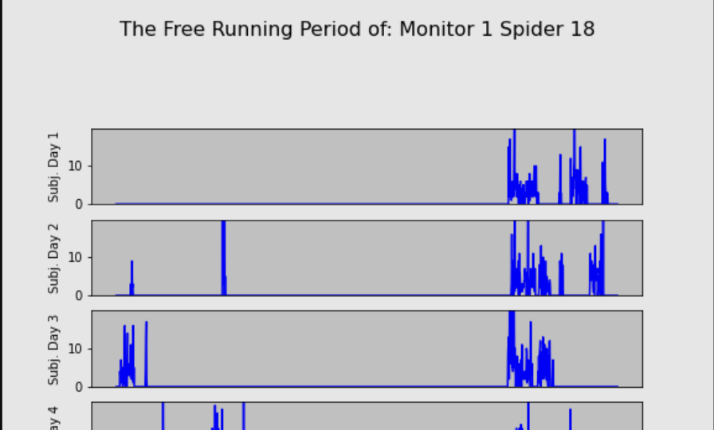

Observing Locomotion Patterns of Metazygia wilfradae in Light and Dark Conditions
Neuroscience 2023, Washington, D.C.
Independent research study investigating whether spiders exhibit circadian rhythms independent of light cues. Collected and cleaned 10,000+ locomotion observations from 30 spiders, then built Python (Matplotlib, Seaborn) visualizations to detect rhythmic patterns across light and dark conditions. Identified circadian periods of 16–32 hours that persisted regardless of light exposure, with findings accepted for a poster presentation at the Society for Neuroscience 2023 national conference.